Zmienia się tylko krój tytułów: tytuł zadania, słowo stopnia, indeksy kart, opis ręki. Treść: na iOS SF Pro; w makiecie zastępczo Noto Sans. Od AX1 tytuły krojem systemowym (decyzja do E3).
Krój książkowy, zaprojektowany dla Google Play Books (README projektu); poker uczy się z książek (szczebel 3 hierarchii źródeł). Obecny, tymczasowy.
wysokość x 51% stopnia · „Dopuszczalna” przy 28 pt: 192 pt
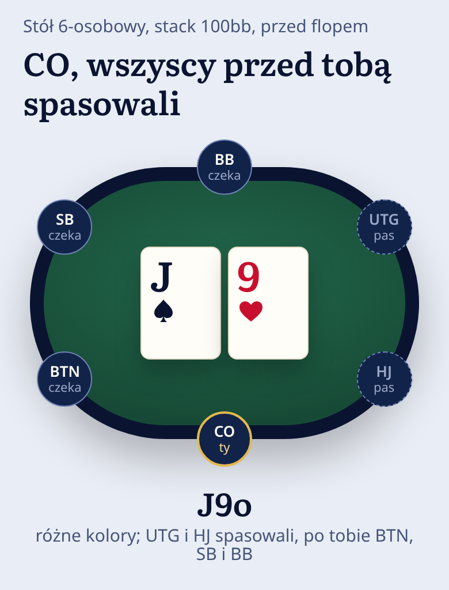
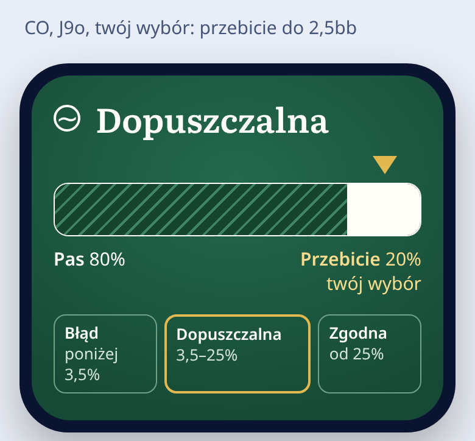
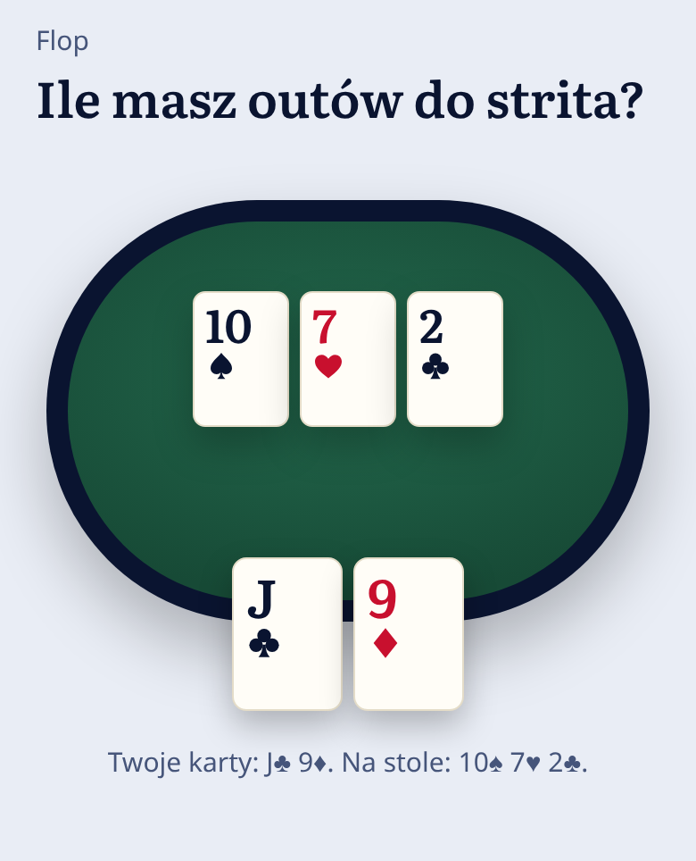
Odpowiednik Georgii, zgodny z nią metrycznie w odmianie Bold (README autora); Georgią 700 dawna aplikacja pisała indeksy kart — ciągłość z punktem odniesienia D-117.
wysokość x 49% stopnia · „Dopuszczalna” przy 28 pt: 199 pt
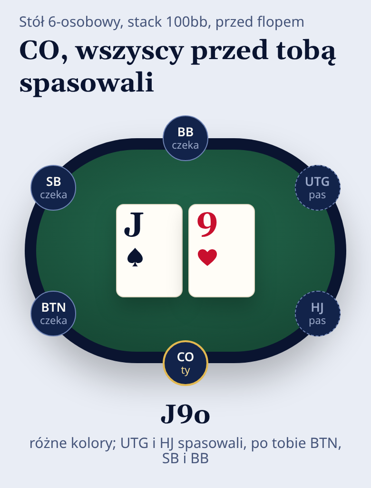
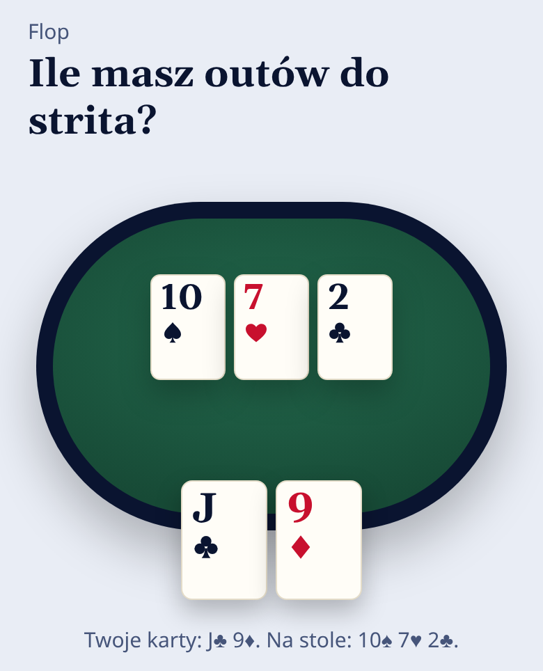
Baskerville z odlewni ATF (1941), przerobiony do czytania na ekranie (README). Klasyczny druk książkowy; bez bezpośredniego śladu w świecie pokera.
wysokość x 53% stopnia · „Dopuszczalna” przy 28 pt: 207 pt
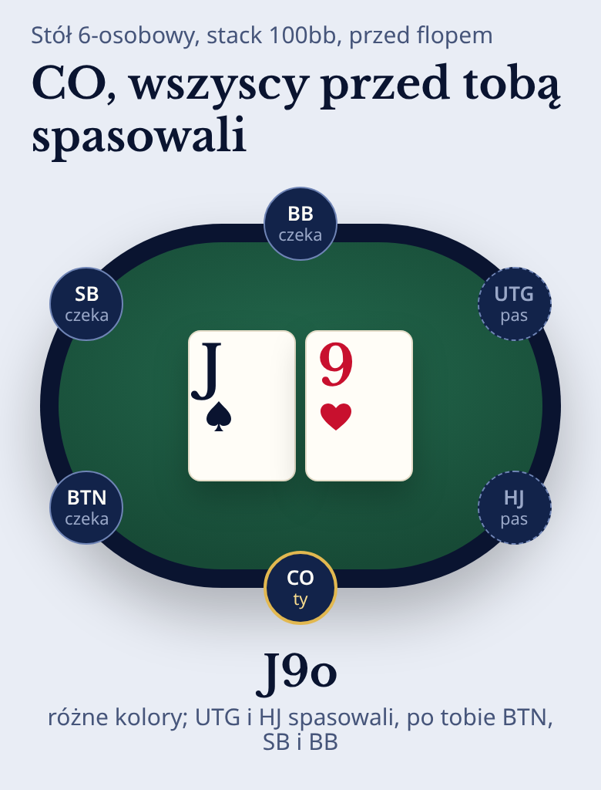
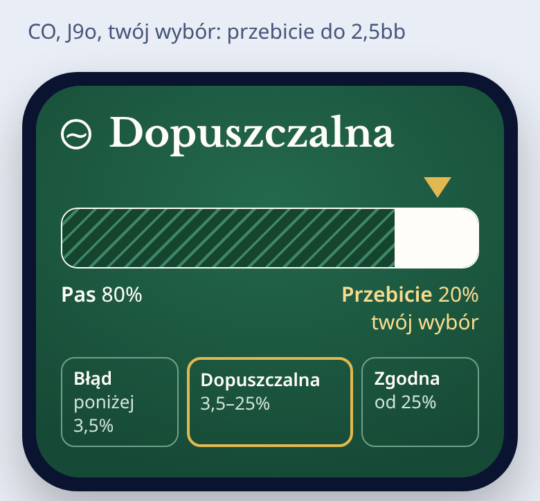
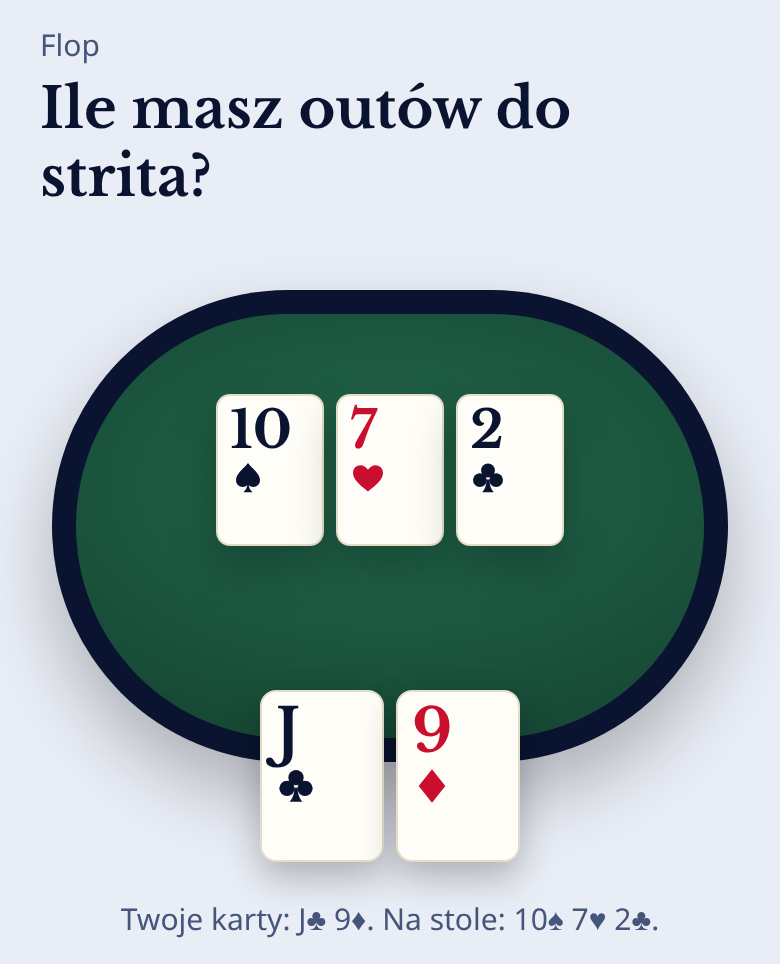
Krój wystawowy w duchu Garamonda: najbardziej odświętny z pięciu. Bez śladu w świecie pokera; mała wysokość x, więc optycznie mniejszy.
wysokość x 39% stopnia · „Dopuszczalna” przy 28 pt: 152 pt
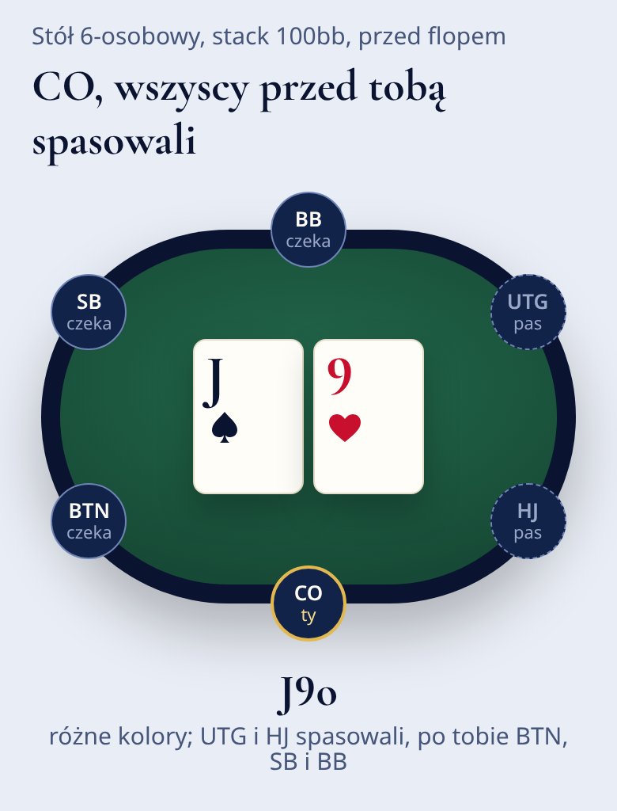
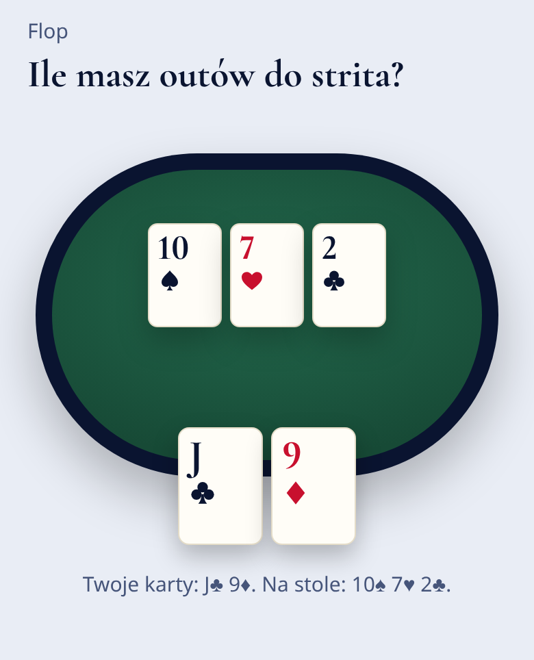
Wąski, wysoki szeryf wystawowy (README), jak wąskie znaki rang w indeksach kart (inwentarz E1). Tylko jedna odmiana: nie zareaguje na „Pogrubiony tekst”.
wysokość x 51% stopnia · „Dopuszczalna” przy 28 pt: 131 pt
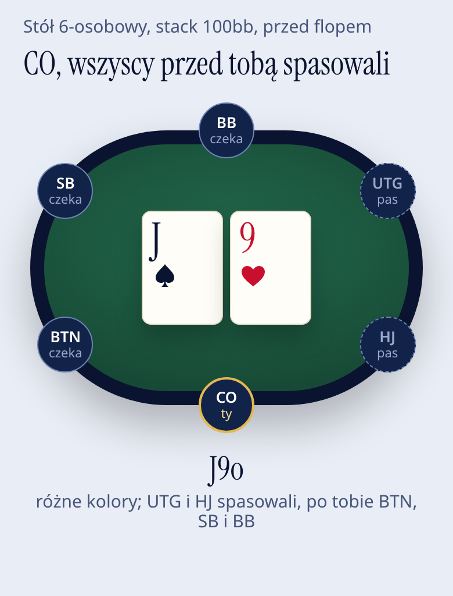
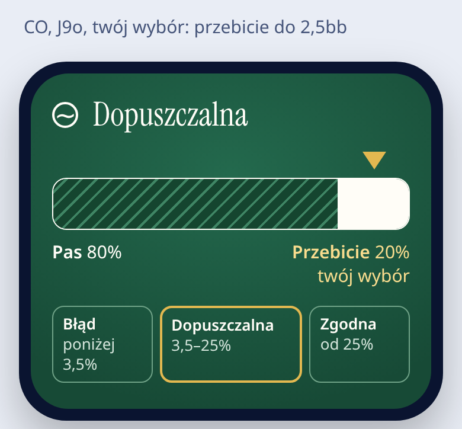
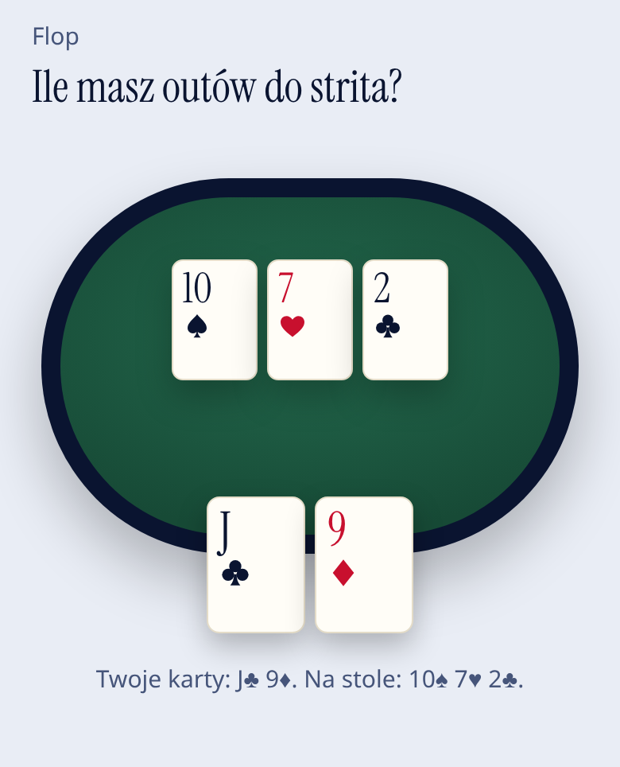